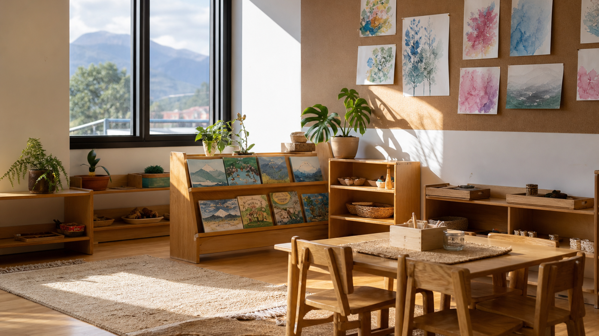

Inicial 1
Estimulación inicial del primer nivel, con un ambiente de juego y acompañamiento.
Consultar ↗
Matrículas abiertas · Ciclo 2026-2027
Capuletos y Montescos Kid Club es el centro de educación inicial en Quitumbe: estimulación Inicial 1 y 2, con horario regular y extendido.
01 / Oferta
Inicial 1 e Inicial 2, con horario regular de 7h45 a 12h45 y horario extendido de 7h00 a 21h00.
Estimulación inicial del primer nivel, con un ambiente de juego y acompañamiento.
Consultar ↗
Continuidad de la estimulación inicial, con aprendizaje lúdico, arte e inglés.
Consultar ↗
De 7h00 a 21h00, para familias que necesitan más tiempo de acompañamiento.
Consultar ↗
Matrículas abiertas para el ciclo escolar 2026-2027, en Kid Club Quitumbe.
Consultar ↗02 / Cómo empezamos
El primer paso es WhatsApp. Desde ahí coordinamos conocer el centro.
Cuéntanos la edad de tu hijo o hija y si buscas Inicial 1, Inicial 2 u horario extendido.
Te recibimos en Quitumbe, Blanca Benítez y Amauta, para que conozcas el espacio y el equipo.
Si el centro encaja, te explicamos el siguiente paso para inscribirse.
03 / Quitumbe

04 / Preguntas frecuentes
05 / Contacto
Escríbenos ahora y coordinamos la visita en Quitumbe.
Hablemos por WhatsApp ↗